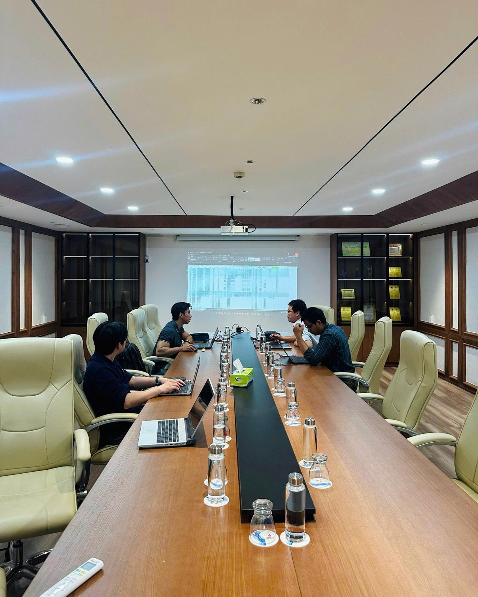
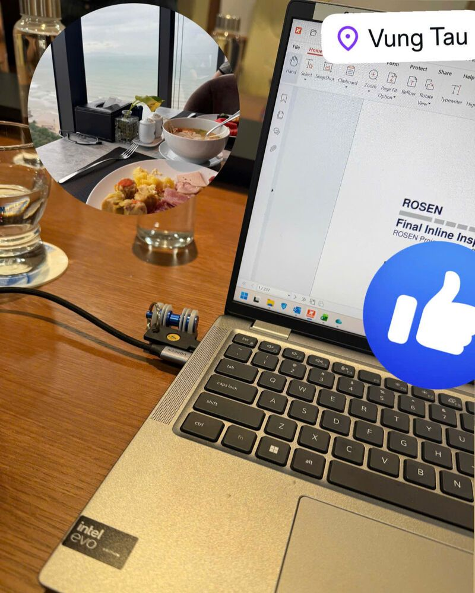

Learning on the Road: A Business Trip with ROSEN


Just wrapped up a business trip with ROSEN, and it was an impactful learning experience.
What the trip pushed me to do
- Engage directly with clients, sharpening my understanding of their expectations and decision-making priorities.
- Rethink how Inline Inspection (ILI) data should be analyzed and presented, shifting from a purely technical focus to a client-centric approach.
- Accelerate my growth through hands-on guidance from my mentor, learning not just what to analyze, but how to think, question, and deliver value.
Beyond the work, the trip also came with some excellent meals at a high-end hotel, a small but very enjoyable bonus that made the experience even more memorable.
The takeaway
Experiences like this are a strong reminder that effective analysis is not only about technical accuracy but about translating insights into meaningful outcomes for clients.
Grateful to ROSEN, my managers and my senior colleague M A Irfan Adzhar for the trust, support, and knowledge shared throughout the journey.
Read the original post on LinkedIn →